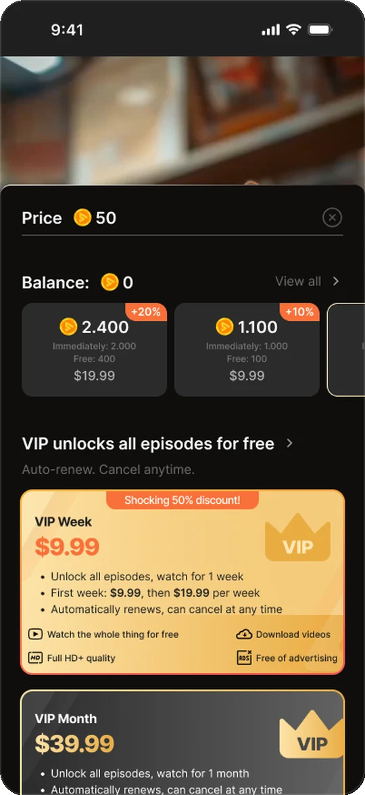
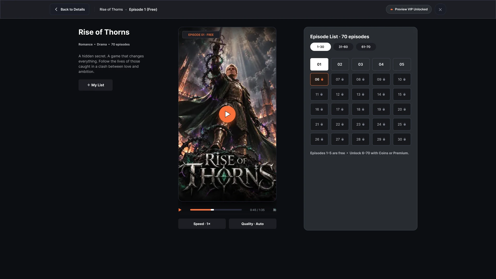
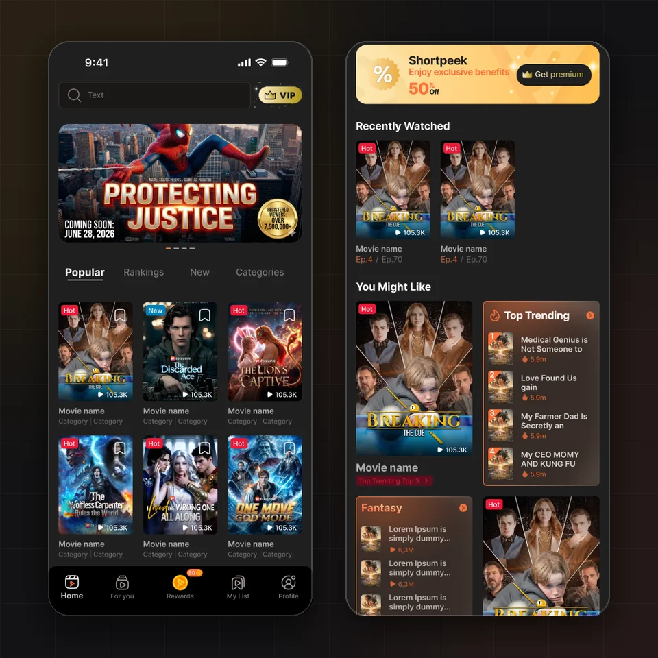
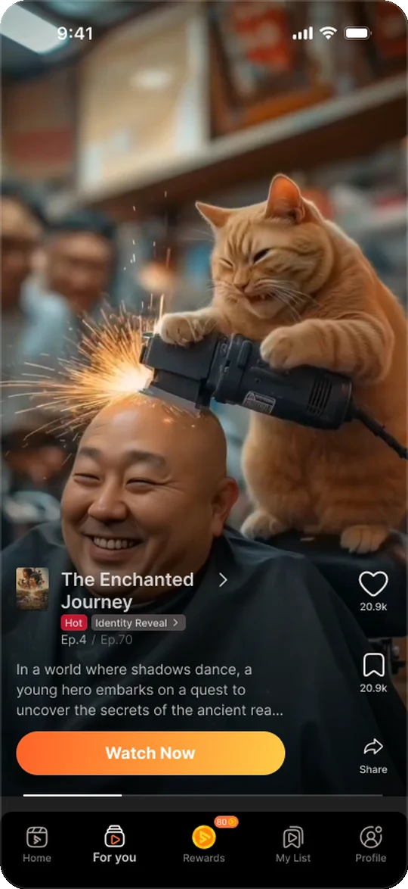
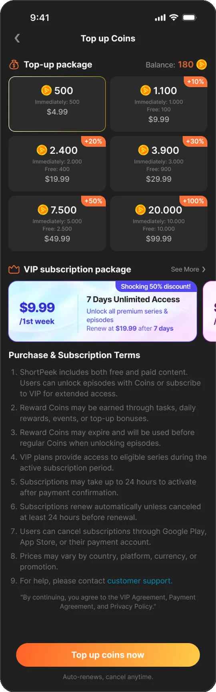
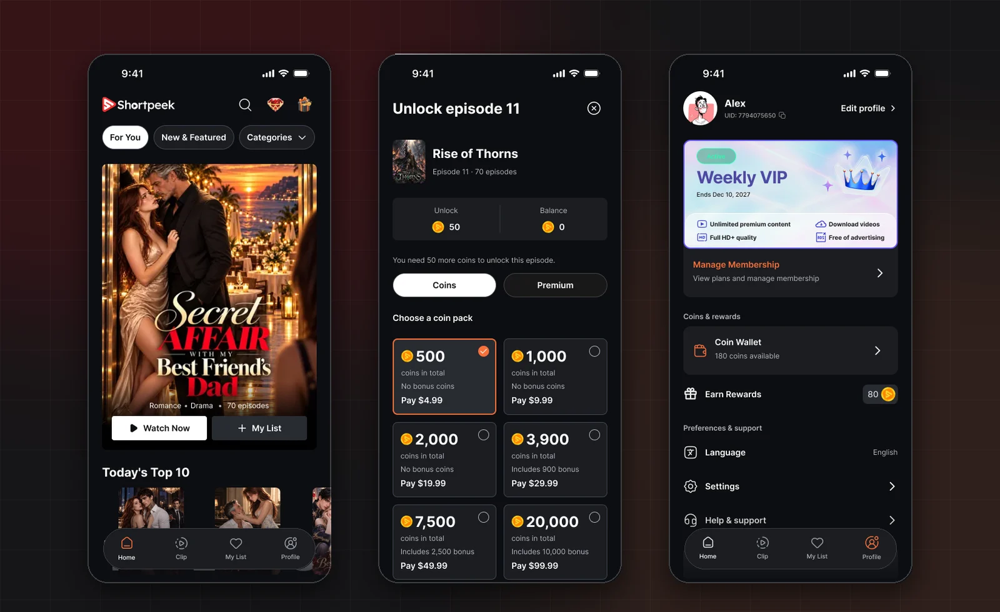

Shortpeek
Khi một tập phim bị khóa, giao diện cũ hiện giá tập, gói xu và thẻ VIP cùng lúc. Tôi thiết kế hai nhánh theo số dư để người xem biết có thể mở tập ngay hay cần thêm xu.
Trong bài
Tách luồng mở khóa theo số dư
Giao diện cũ
Giá tập và số dư nằm trên cùng, còn các gói xu và VIP xếp ngay bên dưới.

Khi đủ xu
Giá tập đặt cạnh số dư. Người xem xác nhận để mở tập.

Khi thiếu xu
Báo số xu còn thiếu trước khi người xem chọn mua xu hoặc xem gói Premium.

Mở khóa ngay trong trình phát trên web
Trên desktop, tôi giữ giá tập và số dư trong hộp thoại mở khóa ngay trên trình phát. Danh sách tập nằm cạnh video để người xem có thể chọn tập trong cùng màn hình.

Modal mở khóa tập & Nạp xu trên Web
Hộp thoại mờ (Modal Dimmer) tối ưu cho con trỏ chuột máy tính: hiển thị rõ số dư xu, chi phí mở tập và gói thành viên tuần/tháng tích hợp cổng thanh toán thẻ quốc tế.

Trình phát Desktop & Side-by-side Episodes
Trình phát video tỷ lệ rộng đi kèm Side Drawer chọn tập trực tiếp (Episodes 1..30) bên hông; người xem chuyển tập tức thì mà không cần thoát khỏi màn hình xem phim.

Nhường chỗ cho phim trên Home
Tôi rút thanh đáy từ năm mục xuống bốn và chuyển Rewards khỏi thanh này. VIP và nhận xu vẫn có lối vào ở đầu trang Home. Phần đầu trang dành cho một poster, với hai hành động là xem ngay và lưu vào My List.
Điểm cần kiểm chứng là người mới có tìm thấy lối nhận xu ở vị trí mới hay không.


Chi tiết thiết kế
Audit trước khi thiết kế lại
Trước đợt chuẩn bị nộp App Store và Google Play, đội muốn giảm số khối khuyến mãi trên màn hình xem phim và làm rõ cách trả phí cho từng tập.
Tôi rà các màn hình gốc, thiết kế lại luồng và giao diện, rồi dựng prototype và hệ thống UI để bàn giao.
Nhiều khối nội dung cạnh tranh nhau
Bản gốc đặt thanh tìm kiếm và nút VIP ở đầu trang, tiếp theo là banner ngang, bốn tab con, lưới ba cột và banner giảm 50% màu vàng đậm; trên màn For you lại phủ nút cam lớn che khuất video.
Thư viện bị tách giữa My List và Profile
Thanh đáy gồm năm mục đặt nút Rewards kèm chấm cam ngay giữa, trong khi mục My Downloads lại nằm trong Profile thay vì đứng chung với phim đã lưu và lịch sử xem.
Xếp chồng gói xu chia dòng và thẻ VIP
Khi mở tập khóa hoặc vào Top up Coins, người xem thấy cùng lúc hàng gói xu chia hai dòng Immediately / Free phải cộng nhẩm, kẹp với các thẻ VIP nhiều màu ở ngay bên dưới.
Chưa phủ đủ lỗi phát và thông tin pháp lý
Bản gốc chưa thống nhất cách xử lý mất mạng, lỗi phát video, cảnh báo quay màn hình, thao tác hoàn tác danh sách hay màn chính sách đi kèm nút thanh toán để nộp duyệt store.

02 · For you gốc
04 · Top up Coins gốcKHÁM PHÁ 05 LUỒNG CHÍNH TRÊN BẢN REDESIGN
Rút thanh đáy còn 4 tab và dọn thoáng màn Home
Tôi đưa Rewards ra khỏi thanh đáy để giữ bốn mục chính thật gọn, còn lối vào VIP và nhận xu nằm cố định ở góc phải header. Đầu trang Home chỉ mở bằng một poster lớn với hai nút rõ ràng để người xem chọn phim ngay.


KIẾN TRÚC THÔNG TIN & HỆ THỐNG UI
Tôi tổ chức lại toàn bộ ứng dụng theo ba cụm luồng chính, đi kèm hệ màu tối và hệ thống component dùng chung để đội phát triển dựng đồng bộ.
Tái cấu trúc 5 khu vực chính
| Khu vực | Bản gốc | Bản redesign |
|---|---|---|
| Bottom Bar | 5 tab: Home · For you · Rewards · My List · Profile | 4 tab nổi: Home · Clip · My List · Profile |
| Home | Banner ngang, 4 tab con, thẻ 50% vàng | 3 filter chip, poster dọc nổi bật, Top 10 |
| Thư viện | Saved/History ở My List; Downloads ở Profile | Gom cả 3 về My List (chọn, xóa, Undo, trống) |
| Mở khóa tập | 1 sheet chồng giá tập, gói xu và 2 thẻ VIP | Tách Đủ xu (1 bước) & Thiếu xu (2 tab) |
| Nạp & Store | Gói xu tách 2 dòng cộng nhẩm; thiếu điều khoản | Ghi thẳng tổng xu, tách IAP / Stripe & điều khoản |
COLOR SYSTEM / DARK-FIRST CINEMA UI
Tách rõ bốn lớp nền tối, nút hành động trắng tương phản cao và cam #F97039 chỉ dùng cho trạng thái chọn hoặc điểm thưởng.
TYPOGRAPHY / INTER
Chỉ dùng một font Inter với bốn bậc cỡ chữ giúp đọc rõ trên màn hình điện thoại mà không làm rối poster.
APP ICON & LOGO MỚI
Tôi làm lại App Icon và logo từ phản hồi review trong đội: giữ nền đen, kết hợp chữ S lồng nút Play màu đỏ trắng để nhận diện ở cỡ nhỏ trên màn hình chính.

CHECKLIST DUYỆT APP STORE & GOOGLE PLAY
Để đội kỹ thuật không phải đoán ở các tình huống phụ và đáp ứng quy định xét duyệt ứng dụng, tôi thiết kế bổ sung màn hình đăng nhập theo nền tảng, trạng thái trình phát, ngoại tuyến và năm trang chính sách.
- Continue with Apple / Google theo đúng nền tảng và nút Not now
- Mất mạng dẫn thẳng tới tập đã tải (View Downloads)
- 10 trạng thái trình phát & cảnh báo quay màn hình
- Tách nút Apple IAP / Stripe và Restore purchases
- Đủ 5 trang chính sách: Terms, Privacy, Top-up, Refund, Help

Apple / Android & Not now
Tặng 20 xu cho lần đăng nhập đầu tiên, nhưng vẫn để nút Not now cho người muốn xem thử trước.

Mở thẳng tập đã tải
Mẫu FeedbackPanel đặt nút View Downloads ngay dưới Try Again để không gián đoạn khi mất mạng.

10 trạng thái trình phát & DRM
Phủ Speed, Quality, Buffering, Playback error, Series complete và cảnh báo chụp hoặc quay màn hình.
So sánh tổng quan


Những gì thay đổi sau review
Chốt App Icon đỏ đen nhưng giữ CTA trắng trên UI
Trong buổi review màn Home, đội góp ý nhấn đỏ và làm lại logo. Tôi vẽ lại biểu tượng chữ S lồng nút Play màu đỏ trắng trên nền đen cho dễ nhận diện. Bên trong app, tôi vẫn giữ nút hành động màu trắng và nhấn cam #F97039 để không lấn ảnh phim.
Gỡ khối nhận xu khỏi Wallet và rút gọn nhãn tab
Từ phản hồi rà soát, tôi rút tên tab thứ tư còn Profile, đổi nhãn sang Top Up và bỏ bớt dòng lặp ở bảng nhiệm vụ. Tôi cũng gỡ khối Earn coins từng đặt cuối Coin Wallet để tách hẳn chuyện nạp tiền khỏi nhiệm vụ nhận thưởng.
Dồn lực cho trạng thái biên và pháp lý trước tính năng phụ
Gần mốc nộp duyệt, tôi chọn ưu tiên những phần ảnh hưởng trực tiếp tới Store: thao tác quản lý My List (chọn, xóa, Undo, màn trống), đường dẫn ngoại tuyến tới tập đã tải, cảnh báo DRM và năm trang chính sách cạnh nút Apple IAP / Stripe.
ỨNG DỤNG CHƯA PHÁT HÀNH · CHƯA CÓ SỐ LIỆU ĐO LƯỜNG
Shortpeek hiện chưa lên store nên tôi chưa có dữ liệu hành vi thực tế để khẳng định bản thiết kế lại cải thiện tỷ lệ giữ chân hay doanh thu. Khi phát hành hoặc chạy usability test, đội ngũ cần kiểm tra ba giả thuyết sau:
CÂN BẰNG THẨM MỸ ĐIỆN ẢNH VÀ MÔ HÌNH TRẢ PHÍ THEO TẬP
Làm mới app phim ngắn theo hướng gọn như Netflix khó nhất ở chỗ bỏ banner rực màu mà vẫn giữ rõ lối kiếm xu và nâng cấp VIP. Phần việc tốn công nhất khi bàn giao cho kỹ thuật nằm ngoài màn Home: nhánh mở khóa theo số dư, đầy đủ thao tác thư viện (xóa, Undo, màn trống) và bộ màn hình lỗi phục vụ duyệt store.
BẠN CẦN PRODUCT DESIGNER CHO DỰ ÁN?
Mình luôn sẵn sàng trao đổi về cơ hội hợp tác, thiết kế sản phẩm hoặc chia sẻ góc nhìn chuyên môn.